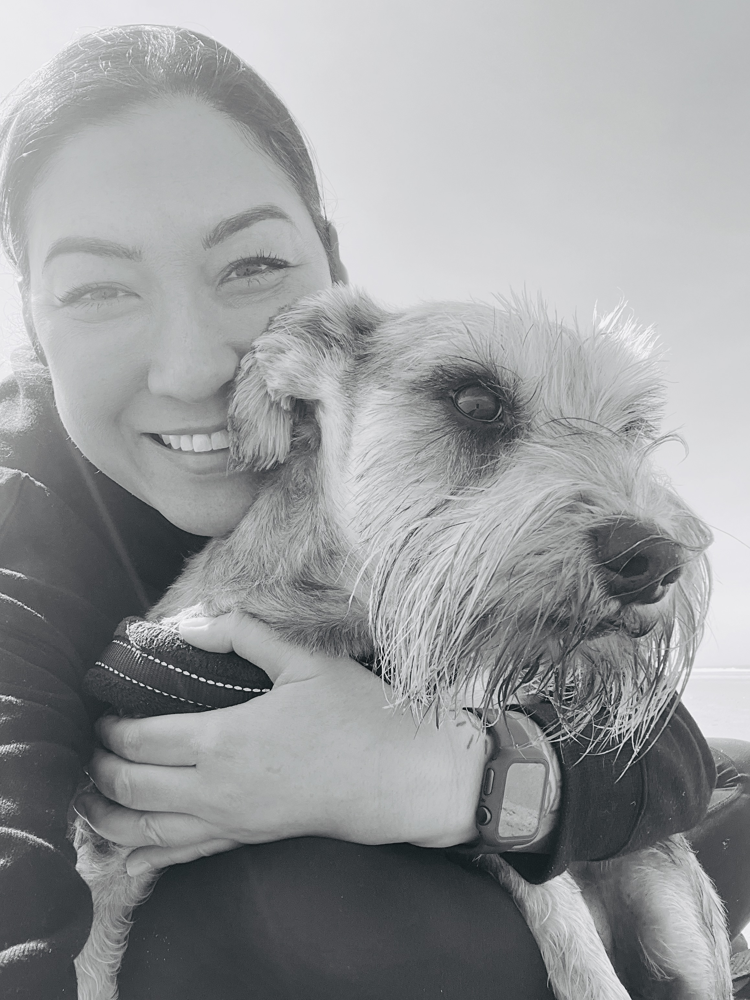

Darlene Duyn

I was in the dental field for 21 years and felt I was at a plateau.
I have wanted to go into tech for many years. Actually, 21 years ago I had to make the decision between dental school and tech. I chose dental, to be honest, I wish I hadn't, though, I have learned a lot from those experiences. Yet finally got myself to a point where I actually could go back to school, so here I am! I'm excited to learn coding and see what kind of avenues it will open up for me, as well as achieving my future goals. In case you are wondering what they are ...
*This is in no particular order*
- Move my mother back to Portand
- Buy a house where she has her own living space
- Travel with my fiancé and family
- Help him achieve his goal (like how is helping me with mine) to be a certified flight instructor
- Start a dog rescue
- Land a job where I can help create and design thee best efficient dental software program for general and specialized dental offices (I already have ideas)
However, I know with these goals in mind, it's going to take a lot of hard work, determination, and patience.
- I'm a painter as in artist. I love working with arylic paint and spray paint. I paint portraits of people and people's pets.
- I love to dance, and sing karaoke. I have an eclectic taste in music. I can sing and dance from Pat Benatar to rapping Dr. Dre. You may catch me leaving burn marks on the dance floor to some good house, techno, or drum and bass. I like to chill to some Thievery Corporation or Groove Armada.
- I really love a good challenge of Mortal Combat, or any fighting video game.
- I love all kinds of food but mainly Thai. I'm half Thai and was spoiled by homemade Thai food growing up.
Favorite-things
Dudley-s-Do-Right
These were both created by using HTML, CSS, and Github